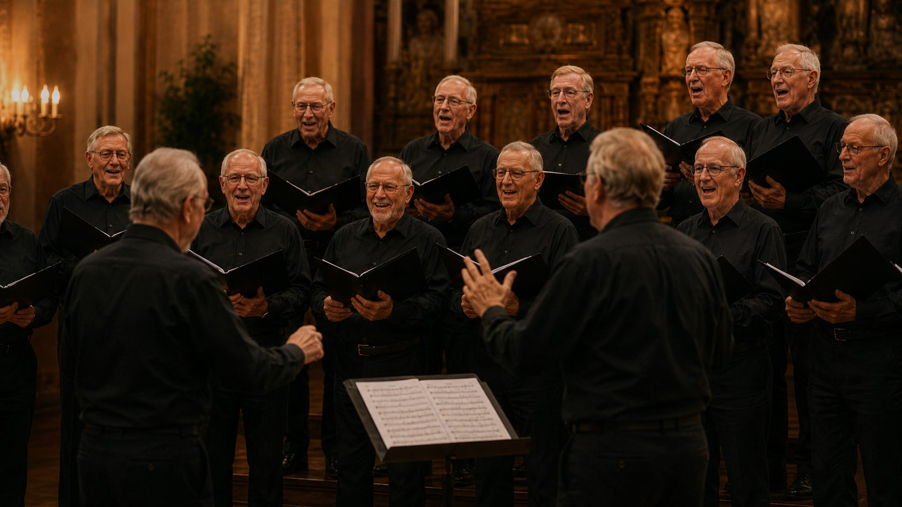

Plezier
Zingen begint voor ons bij genieten, lachen en samen iets moois neerzetten.
Home / Over Spontaan
Samen zingen, samen groeien en samen plezier beleven. Dat is waar wij als mannenkoor voor staan.
Wie wij zijn
Spontaan is een mannenkoor uit Angerlo waar samen zingen, plezier en verbondenheid centraal staan.
Met aandacht voor elkaar werken wij aan mooie samenzang. We zingen met enthousiasme, voor elkaar en voor ons publiek.

Ons verhaal
Spontaan ontstond vanuit de wens om samen te zingen en plezier in muziek te delen.
De zanggroep ontwikkelde zich verder in samenzang, repertoire en optredens.
We zingen met enthousiasme, aandacht voor elkaar en plezier voor ons publiek.
We blijven ons muzikaal ontwikkelen en staan open voor nieuwe ontmoetingen.
Missie en waarden
Zingen begint voor ons bij genieten, lachen en samen iets moois neerzetten.
We werken met inzet en aandacht aan een mooie klank en sterke gezamenlijke uitvoeringen.
We luisteren naar elkaar, ondersteunen elkaar en vieren onze gezamenlijke momenten.
Een vriendelijke en respectvolle sfeer geeft iedereen de ruimte om zichzelf te zijn.
Onze sfeer
Bij Spontaan heerst een open en vriendelijke sfeer. We zijn verschillend, maar delen dezelfde passie voor muziek.
De saamhorigheid is voelbaar tijdens het zingen en in de momenten daaromheen.

Samen zingen geeft energie, verbinding en veel mooie momenten.
Nieuwsgierig geworden?
Benieuwd naar onze zanggroep? Bekijk de agenda of neem contact met ons op.